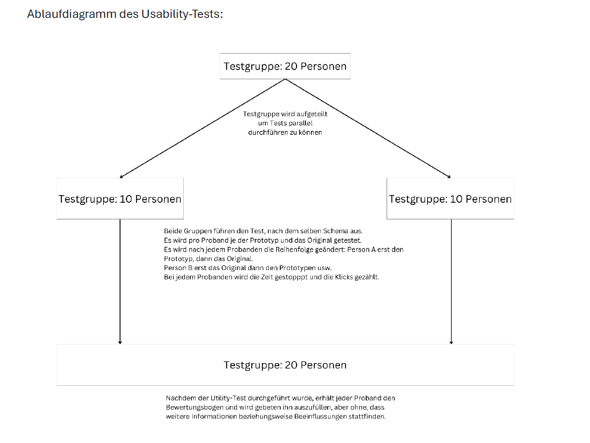

Übersicht
Das Modul "Usability Testing & Engineering" bietet eine umfassende Einführung in die Evaluierung von Benutzerfreundlichkeit. Die Studierenden lernen Methoden und Werkzeuge zur Durchführung und Analyse von Usability-Studien kennen.
Inhalte
- Grundlagen: Usability, User Experience, Forschungsdesigns.
- Methoden: Heuristische Evaluationen, kognitive Walkthroughs, Eye-Tracking, UX-Fragebögen (UEQ).
- Statistische Analysen: Parametrische und nicht-parametrische Tests, ANOVA, Chi-Quadrat-Tests.
- Prototyping: Low-, Mid-, High-Fidelity-Prototypen.
- Evaluation: Pilotstudien, Vergleich von Prototypen mit bestehenden Systemen.
Ablauf
- Theoretische Grundlagen:
- Forschungsdesigns und statistische Verfahren.
- Validitäts- und Reliabilitätskonzepte.
- Praktische Übungen:
- Entwicklung von Prototypen für reale Systeme.
- Analyse und Visualisierung von Testdaten.
- Planung und Durchführung von Usability-Tests mit Berichterstellung.
- Vergleich von Originalsystemen und Prototypen.
- Präsentation der Ergebnisse in Laboren.
Ziele des Moduls
Studierende lernen, Usability-Tests zu planen, durchzuführen und zu analysieren. Sie entwickeln die Fähigkeit, die Benutzerfreundlichkeit von Systemen mit empirischen Methoden zu verbessern.
Beispiel
Auszug aus einer Aufgabe aus Usability Testing & Engineering
Aufgrund der Ressourcen, die uns zur Verfügung stehen, haben wir uns für die Durchführung von Usability-Tests, mit Probanden entschieden die als "Within-Subjects" agieren sollen, um so den Aufwand zu minimieren mehr Probanden zu finden. Weiter soll im Anschluss eine Rating-Skala ausgefüllt werden, die fünf Fragen enthält und die Möglichkeit bietet noch Anmerkungen zu machen. So versprechen wir uns, mit der Zeit, die uns zur Verfügung steht, Daten zu sammeln, die verwertbar sind. Für die Sicherstellung der internen Validität planen wir, dass die Usability-Tests, die von den Probanden durchgeführt werden sollen, immer den gleichen Ablauf haben also, dass der Startpunkt und das Ziel, welches erreicht werden soll, bei jedem Probanden gleich ist. Weiter wird auch die Rating-Skala immer dieselben Fragen enthalten und diese Fragen werden so gestellt sein, dass sich bei durchgehender Höchst- beziehungsweise Niedrigst-Bewertung ein, für unsere Bewertung, mittelmäßiges Ergebnis einstellt. Die externe Validität wird durch die Befragung der tatsächlichen Nutzergruppe, bestehen aus Studenten und Schülern, gewährleistet. Um das Ergebnis zu generalisierbar zu machen, planen wir die Probanden stichprobenartig zu suchen um ein weites Spektrum an Jahrgängen
